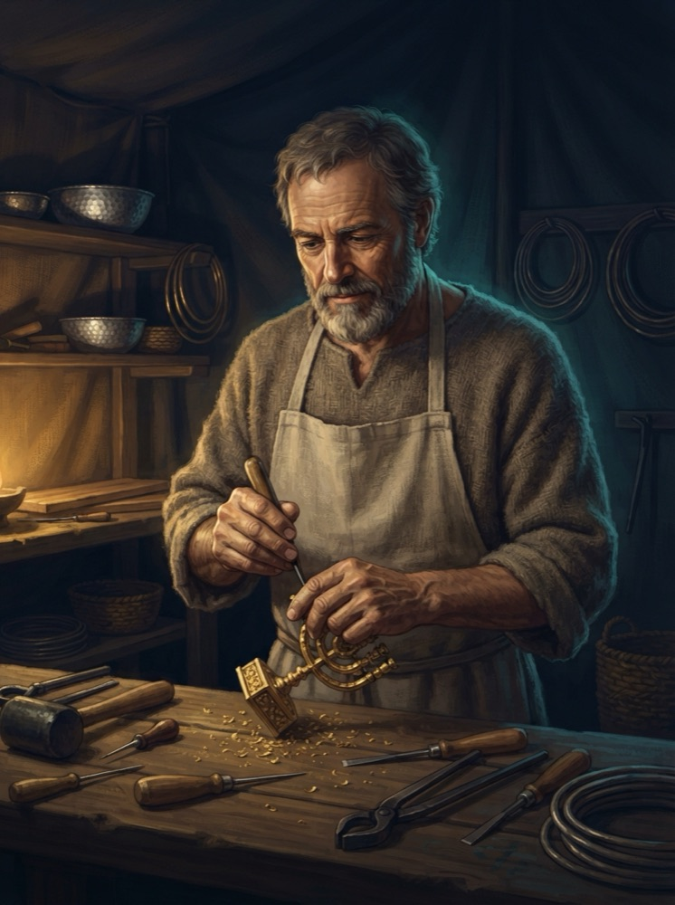
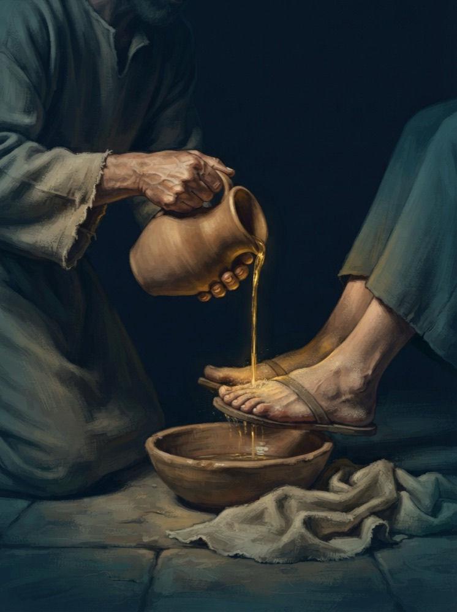

Что у тебя хорошо получается?
Как найти и использовать своё призвание
Что у тебя хорошо получается?
Служите друг другу, каждый тем даром, какой получил, как добрые домостроители многоразличной благодати Божией.
1 Петра 4:10
Заметь«Каждый тем даром, какой получил» – значит, дар уже получен. И тобой тоже.
Часть 1
Без исключений. Даже если ты его пока не видишь.
Дары различны
Служения различны
Действия различны
Но каждому дается проявление Духа на пользу.
1 Коринфянам 12:7
ВыводНет «главных» и «второстепенных» даров – есть один Дух и разные люди.
Отговорка: «я не умею говорить»
И сказал Моисей Господу: о, Господи! человек я не речистый, и таков был и вчера и третьего дня, и когда Ты начал говорить с рабом Твоим: я тяжело говорю и косноязычен.
Исход 4:10
Итак пойди, и Я буду при устах твоих и научу тебя, что тебе говорить.
Исход 4:12
Бог видит твой дар раньше тебя.
Отговорка: «я меньший в доме»
Гедеон сказал ему: Господи! как спасу я Израиля? вот, и племя мое в колене Манассиином самое бедное, и я в доме отца моего младший.
Судей 6:15
И сказал ему Господь: Я буду с тобою, и ты поразишь Мадианитян, как одного человека.
Судей 6:16
Бог зовёт тебя «муж сильный» (Суд. 6:12), когда ты видишь себя младшим в доме.
Часть 2
Руки, ремесло и пастушья праща тоже бывают исполнены Духа.

Ремесленник
И Я исполнил его Духом Божиим, мудростью, разумением, ведением и всяким искусством, работать из золота, серебра и меди, резать камни для вставливания и резать дерево для всякого дела.
Исход 31:3–5
Первый в Библии человек, о котором сказано «исполнен Духом», – мастер по золоту и дереву.
Пастух
И сказал Давид: Господь, Который избавлял меня от льва и медведя, избавит меня и от руки этого Филистимлянина. И сказал Саул Давиду: иди, и да будет Господь с тобою.
1 Царств 17:37
Годы «незаметной» работы на пастбище Бог превратил в победу для всего народа.
Никак – пока сидишь.
Дар раскрывается только в служении. Начни с малого – и увидишь, что Бог вложил в тебя.
Господин его сказал ему: «хорошо, добрый и верный раб! в малом ты был верен, над многим тебя поставлю; войди в радость господина твоего».
Матфея 25:21

1
То, что для тебя «само собой», для других может быть даром.
2
Спроси двух-трёх человек, которые тебя знают. Не спорь с ответом.
3
Бог производит в нас «и хотение и действие» (Флп. 2:13) – устойчивое желание служить в каком-то деле может быть Его подсказкой.
Твой дар уже в тебе.
1 Петра 4:10